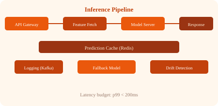

A production ML system architecture built step by step, from raw data to deployed prediction.
Raw data enters the system through batch or streaming paths.
# Ingestion architecture
Batch path: Daily database dump → Airflow → S3 raw bucket
Streaming path: User events → Kafka → Flink → S3 raw bucket + Feature StoreRaw data is stored in a data lake (S3, ADLS, GCS). Processed features go to a feature store (Feast, Tecton). Labels are stored in a data warehouse (Snowflake, BigQuery).
Spark or Dask jobs transform raw data into features. The same transformation logic must be used in training AND serving to avoid training-serving skew.
# Consistent transformation (shared code)
def compute_features(raw):
return {
"amount_log": log(raw.amount + 1),
"hour_of_day": raw.timestamp.hour,
"is_weekend": raw.timestamp.weekday() >= 5,
"merchant_risk": lookup_merchant_risk(raw.merchant_id)
}Training jobs read features from the offline feature store, train models using frameworks (PyTorch, XGBoost, TensorFlow), and log results to the model registry.
Models are evaluated against champion metrics. If they win, they are registered and staged for deployment. Approval gates may require manual review.
The model is deployed to a serving infrastructure. Common patterns: rolling update, canary deployment, shadow deployment.
Inference requests hit the serving layer: API gateway → feature fetch → model server → response. Predictions are cached, logged, and monitored.
Predictions and features are logged. Drift detection runs continuously. Ground truth (when available) is collected for accuracy computation. Degradation triggers alerts and retraining.
